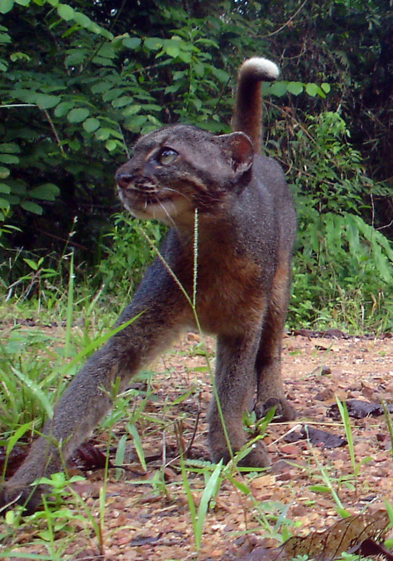

About The Bay Cat Scientific Facts
The Bornean Bay Cat's scientific name is the Pardofelis badia. It also has many other names such as, Bornean Bay Cat, Bornean Cat, Bay Cat, and the Bornean Marbled Cat. It is in the family called Felidae and class called mammalia. Also the first was seen in 1922. But, there is so much more about this cat.
Habitat and About its life
The Bay Cat is known for living in many areas like areas of rocky limestone, on the edge of dense jungles, dense primary forests and along the river. It is also said that they have been seen in the island of Borneo. The bay cat is known to be the size of a large house cat that weights between 5-10 pounds. They have two different color furs which are there most common chestnut-red and then grey-black. But to tell the different of what the animal is this cat has a very long tail that are about 12 to 15.9 inches and some can climb trees. Finally, if you are out at night around where they live you may hear them because they are nocturnal.
Why they are endangered and how to help
These cat are almost gone with about only 2500 left in the world. They Bornean Bay cat are decreasing in size. This is caused because of habit loss to commercial logging and palm oil plantations. Also some people are illegally capturing theses cats to sell there skin and at pet markets. To help the cats Indonesian timber company and the Natural Conservancy is making sure only 5 trees can be removed per hectare on wildlife. Also, Borneo has a legal protection for the Bornean Bay Cat to stop trade.


Fun Facts!
- There are no Bay Cats in any zoo
- There life span is unknown
- Zoos offer a prize of 10,000 dollars for each bay cat they get from the wild
- They are most likely related to Asian golden cat and marbled cats
- These cats were only caught on camera once.